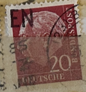
| SOURCE | TITLE| IMAGE MATCH | click to source page |
| eBay | Germany, West - 1954 - Professor Dr. Th. Heuss - 20Pfg - #2272 | eBay | 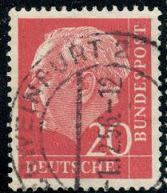 |
| eBay | German German & Colonies Red 1951-1960 Year of Issue Stamps | eBay | 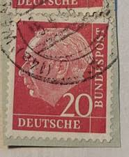 |
| Tool to scan stamp in high quality and efficiently : r/philately | 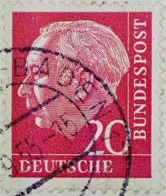 | |
| Poppe Stamps | Poppe Stamps: German Federal Republic, 1954, 1111, Presidents, Presidents - stamps for sale by theme and country | 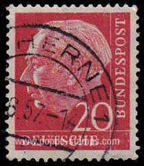 |
| Federal Republic of Germany German Federal Post Deutsche Bundespost 1950 - 1956 rank insignia Links are in the comments. Any corrections, additions, photographs, or further information are welcome in the comments. | 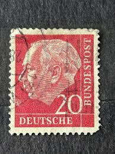 | |
| Alamy | West Germany Postage Stamp - Prof. Dr. Theodor Heuss (1884-1963), 1st German President Stock Photo - Alamy | 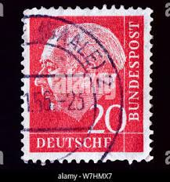 |
| Alamy | Postage stamp from the Federal Republic of Germany in the Federal President Theodor Heuss series issued in 1954 Stock Photo - Alamy | 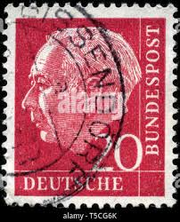 |
| Etsy | Postage Stamp Germany 20 Pfennig 1954 Michel 185 Stamped - Etsy UK | 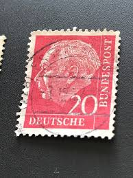 |
| Dreamstime.com | President Theodor Heuss Stock Photos - Free & Royalty-Free Stock Photos from Dreamstime | 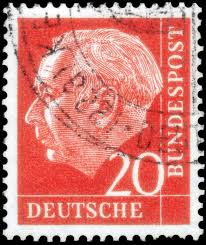 |
| eBay | Germany stamps - Prof Dr Theodor Heuss (1884-1963) 20 pfennig 1954 | eBay | 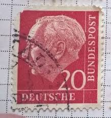 |
| eBay | German Stamps PF 1951-1960 Year of Issue for sale | eBay | 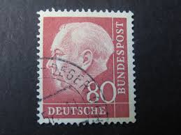 |
| eBay Australia | Politicians German & Colonies Stamps for sale | Shop with Afterpay | eBay Australia | 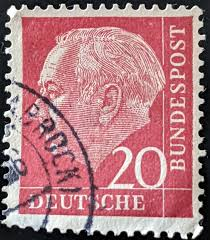 |
| eBay | GERMANY ~ Deuirches Reich ~ Stamp 20 Heller/Tax Stamp 2 ~ Posted ~ 1948 ~ P33 | eBay |  |
| eBay | Germany, West - 1954 - Professor Dr. Th. Heuss - 20Pfg - #2271 | eBay | 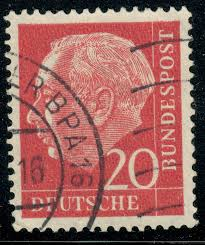 |
| 123RF | Made Germany Stamp Stock Photos and Images - 123RF |  |
| eBay | Germany Postage ~ Deutsche Bundespost ~ 20D Red Stamp ~ Posted/Used ~ 1954 ~ G56 | eBay | 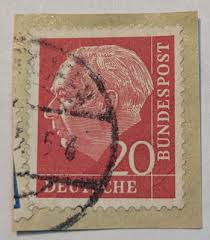 |
| Stamp Auction Network | Prices Realized | 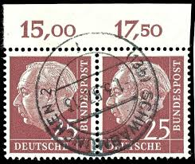 |
| Mercari | United States 12-cent stamp featuring | Mercari | 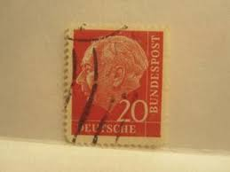 |
| eBay | Germany Postage ~ Deutsche Bundespost ~ 20D Red Stamp ~ Posted/Used ~ 1954 ~ N61 | eBay | 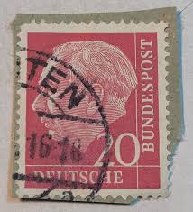 |
| eBay | GERMANY ~ Deuirches Reich ~ Stamp 20 Heller/Tax Stamp 2 ~ Posted ~ 1948 ~ P31 | eBay | 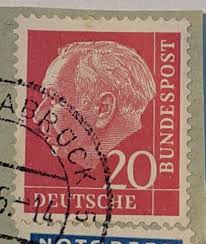 |
| Alamy | Germany - stamp 1954: Edition dedicated to First German President, shows Professor Dr. Theodor Heuss Stock Photo - Alamy | 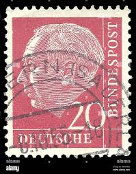 |
| eBay | Germany stamps - Prof Dr Theodor Heuss (1884-1963) 60 pfennig 1954 | eBay | 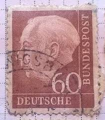 |
| eBay | Germany Postage ~ Deutsche Bundespost ~ 20D Red Stamp ~ Posted/Used ~ 1954 ~ 01 | eBay | 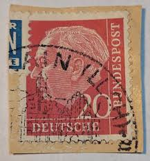 |
| PicClick UK | GERMAN STAMP JEDERZEIT Sicherheit 50 Pfennig Deutsche Bundespost £1.16 - PicClick UK | 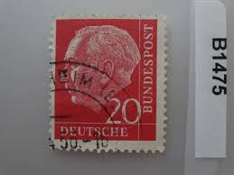 |
| Shutterstock | 973 June 1963 Royalty-Free Images, Stock Photos & Pictures | Shutterstock | 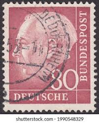 |
| eBay | Germany BRD Bundes Heuss Polizei POL Lochung Police Perfin Official Stamp 60952 | eBay |  |
| Shutterstock | 1,111 West Germany Postage Stamps Royalty-Free Images, Stock Photos & Pictures | Shutterstock | 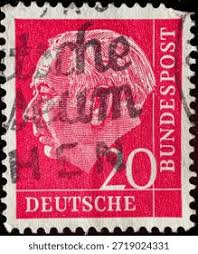 |
| Dreamstime.com | Walther Schreiber Stock Photos - Free & Royalty-Free Stock Photos from Dreamstime | 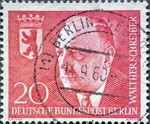 |
| Alamy | First german postage stamp hi-res stock photography and images - Page 2 - Alamy | 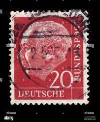 |
| eBay | GERMANY BRD 1854 20pf Paper with Fluorescence Mi. 185y Used Stamp A4P2F39496 | eBay | 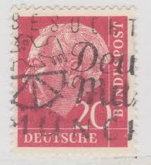 |
| myloview.com | Germany, ddr - circa 1959 : a postage stamp from germany, gdr • wall stickers weimar, stamp, special | myloview.com | 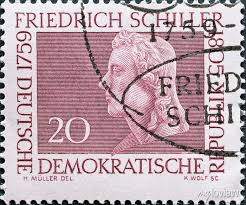 |
| Shutterstock | Ankara Türkiye 22 March 2021 German Stock Photo 1940839861 | Shutterstock | 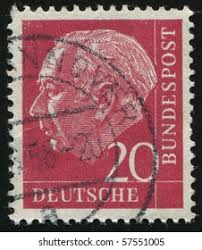 |
| eBay | West Germany - 1954 - Professor Dr. Th. Heuss - 20Pfg - Used - #07 | eBay | 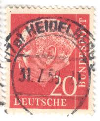 |
| Dreamstime.com | 1,244 Federal Republic Germany Postage Stamp Stock Photos - Free & Royalty-Free Stock Photos from Dreamstime | 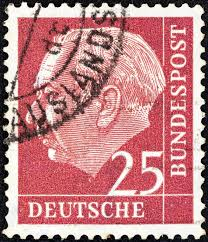 |
| eBay | GERMANY SCOTT # 717, USED, GREAT PRICE! | eBay | 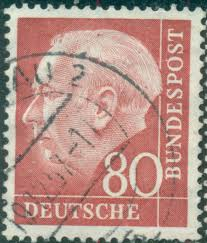 |
| Alamy | GERMANY - CIRCA 1954: a postage stamp printed in Germany showing an image of Bertha Pappenheim, circa 1954 Stock Photo - Alamy | 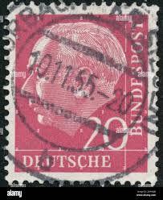 |
| eBay | Germany 1954 DDR Heuss Covers with tabs, Block of 8, Lufthansa cachet Air Mail | eBay | 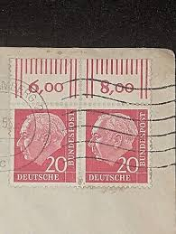 |
| iStock | Vintage Stamp Germany Pope John Xxiii Stock Photo - Download Image Now - 1969, Abstract, Adult - iStock | 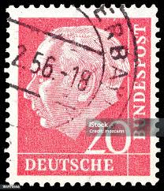 |
| Dreamstime.com | Federal Republic of Germany 200 Euro Gold Coin Monetary Union 2002 Stock Image - Image of sign, back: 143110543 | 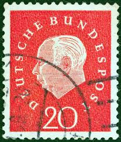 |
| Etsy | Buy Vintage 1960 Düsseldorf Postcard – Königsallee (king's Avenue), Germany Online in India - Etsy |  |
| eBay | 1938 Canada Sc# 245 - $1.00 Chateau de Ramezay - Pictorial Issue - MLH | eBay | 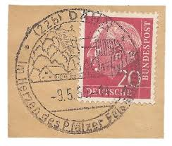 |
| eBay | GERMANY ~ Deutrche/Bundespost ~ 20 Saufend ~ Cancelled/Posted ~ c.1954 ~ P42 | eBay | 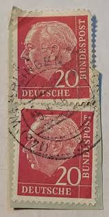 |
| eBay | DEUTSCHES BUNDESPOST ~ Dr. Theo Heuss ~ 20PF Red Stamp ~ Posted ~ 1954 ~ E09 | eBay | 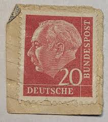 |
| Mercari | 1941 Poland (No.72) German Occupation | Mercari | 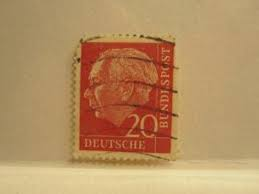 |
| Poppe Stamps | Poppe Stamps: German Democratic Republic, 1959, E467, Poets, Birth, Poets, Birth - stamps for sale by theme and country | 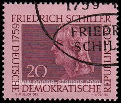 |
| Shutterstock | Karnal Haryana India -august 6th 2025-closeup Stock Photo 2671517675 | Shutterstock | 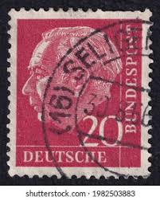 |
| Shutterstock | Definitive Stamps: Over 4,170 Royalty-Free Licensable Stock Photos | Shutterstock | 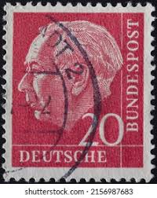 |
| JF-Stamps | Stamps | JF Stamps Danmark | 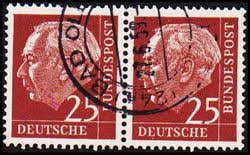 |
| Dreamstime.com | Allemagne Ddr Circa 1959 : Timbre-poste Allemand Gdr Montrant Le Portrait Du Poète Friedrich Schiller 1759ndash 1805 En W Image éditorial - Image du lettres, ramassage: 213007150 | 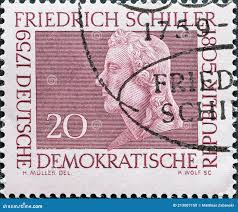 |
| Dreamstime.com | Postage Stamps of the German Empire. Editorial Stock Image - Image of post, used: 234547969 | 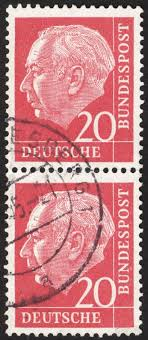 |
| Poppe Stamps | Poppe Stamps: German Federal Republic, 1959, 1221, Numbers - Values And Letters - Characters, Personalities, Numbers - Values And Letters - Characters, Personalities - stamps for sale by theme and country |  |
| Alamy | West Germany Postage Stamp - Dr. h.c. Heinrich Lübke (1894-1972), 2nd Federal President Stock Photo - Alamy | 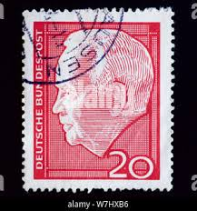 |
| Free stamp catalogue | Stamps from Germany, Federal Republic - Freestampcatalogue.com - The free online stampcatalogue with over 500.000 stamps listed. | 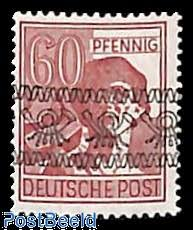 |
| Flickr | Flickr All Stars*! | Flickr |  |
| Amazon.co.uk | Prophila Collection Berlin (West) 184wP horizontal Couple unmounted mint/never hinged ** MNH 1959 Heuss (Stamps for collectors) : Amazon.co.uk: Toys & Games | 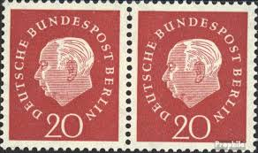 |
| Federal University of Agriculture, Abeokuta | Vtg Postage Stamp Cover Deutsches Reich Karl Von Hindenburg 10 15Pf Germany 1933 – FUNAAB Zoo Park | |
| eBay | Germany RFA BRD Stamp 175, Celebrity, Canceled, VF Stamp | eBay |  |
| eBay | Germany Stamp Theodor Heuss 20pf Used Red | eBay | |
| Dreamstime | Cancelled Postage Stamp Printed Germany Danzig Shows Coat Arms Stock Photos - Free & Royalty-Free Stock Photos from Dreamstime |